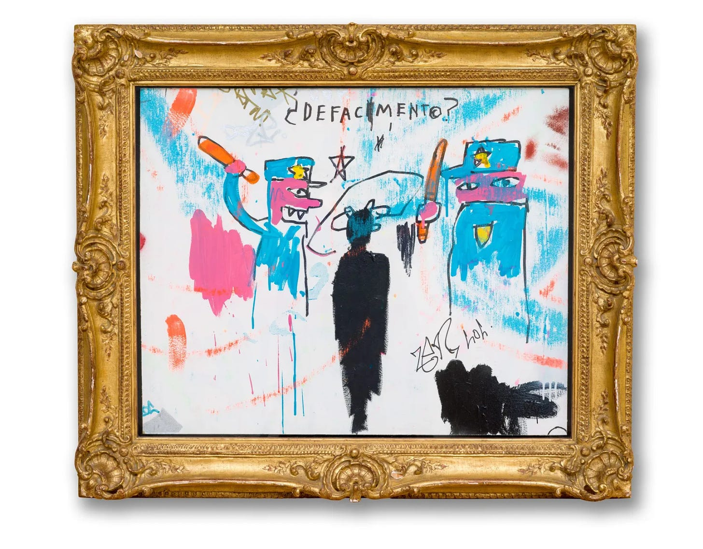

我亦是我"故土的異鄉人"，我亦是出走的娜拉 -–—“德黑兰来信”回声 - WOMEN我们
整整四天我沒有合過眼，一直坐在一張木凳子上，連上廁所的需求在一開始都是不被允許的。我面臨他們隨時的突擊審訊，他們試圖在我疲憊不堪時找出我陳述裡的邏輯漏洞並以此恐嚇我，要我出賣朋友。

“The Death of Michael Stewart,” from 1983./© Estate of Jean-Michel Basquiat — Artestar
这是两则读者在“‘德黑兰来信'：中国被捕者家书”一文下留下的评论。事实上很多朋友提到，这篇文章让她们想起自己同样的经历。这让我们发现，那么多人曾经 在万马齐喑中进行过力所能及的反抗，并且付出了生活被摧毁的极大代价。遭遇警察暴力在中国如此普遍，我们希望有更多人听到她们的声音。
我们没有进行太多编辑，保留了评论者喜欢用的简体或繁体。
我们也希望更多的朋友来信，讲述自己的经历以及应对警察暴力的经验或教训。我们的邮箱：chugaofirstdraft@proton.me 。
经受过同样的对待，抓捕的时候我在家人的帮助下逃到了公园，把手机关机了依然能被追踪，幸好手机也丢了，最后出动了大量的警力警犬还沿路把车也拦了排查，幸 好家人提前一步找到了我，害怕，现在看到监控就感到隐隐的害怕，即便在这里说话也感到害怕，万一起来以后就被警察抓了，总是忍不住这样想，对活着已经再无 要求，对自己的命运也已经失去了改善的欲望，我能切身的感受到文章里的情绪，这种情绪在我心里经过这么长时间的沉淀（三个月）,已改变了我，我无法确定这 种恐惧给了我多大的影响，我只知道它已经彻底改变了我。
跟評論區與作者一樣，經歷過同樣的遭遇，同樣的對待，時間同樣是在十月。
我唯一幸運一些的地方，或許是我只被關了四天半。他們沒有找到我的私人手機，沒有證據，最後放了我。那段時間我正好在辦上一份工作的離職。原本順利的離職， 因為這件事情被迫搞砸。那四天給我帶來的恐懼與創傷，是哪怕事隔數月，哪怕疫情政策早已轉向，如今的我都仍然無法向任何人完全訴說清楚的。
那四天沒有人知道我被帶走，沒有人知道我去了哪裡，在裡面的我也不知道還要被他們那樣折磨多久。他們二十四小時地突擊審訊我，對我進行睡眠剝奪，無所不用其 極地威脅、恐嚇我。要我交代我的同伴，支持我的「境外勢力」，我過往在異地(HK, XJ)的經歷，以及拷問我女權主義者的身份。
我在被放出來後，抑鬱直接復發，生活秩序被完全摧毀。一位朋友聽到我說我被帶走四天沒有睡覺，寬慰我說也還好，反正我本來也不太需要睡覺（因為我之前就有失眠問 題）。我當時沒有告訴朋友，那不是我需不需要睡覺的問題。整整四天我沒有合過眼，一直坐在一張木凳子上，連上廁所的需求在一開始都是不被允許的。我面臨他 們隨時的突擊審訊，他們試圖在我疲憊不堪時找出我陳述裡的邏輯漏洞並以此恐嚇我，要我出賣朋友。我在完全沒有睡眠的同時，還需要保持時刻的清醒與理智。我 對著他們撒謊，並咬死了我沒撒謊。那是非常考驗心理素質的博弈，我坐在審訊桌的另一端，不被允許擁有任何隨身物品，看不到他們的電腦，不知道他們到底掌握 了多少內容，我只能賭。我賭他們找不到證據，形成不了證據鏈，定不了我的罪。（當然，如果找到了我也得否認）
看到作者寫的「故土上的異鄉人」的感觸很深。我並不來自德黑蘭，我來自伊朗的伊斯法罕。這裡的方言是Lori語。每一次伊斯法罕的警察聽我報完我的身份編號後，便會略帶驚異地發現我 是本地人。他們會用Lori語審我，威脅我，跟我套近乎。我從未搭過腔。我不願意在這些場景下使用Lori語對話，我無比厭惡並且痛恨這些本地警察使用方 言審訊我，嘲笑我。他們笑我愚蠢，笑我放著這麼好的日子不過搞這些不值當。他們說會做這些事情的都是住在伊斯法罕的異鄉人。我內心厭惡並發笑，好啊，真 好！異鄉人真好！沒有本地人的高高在上，精緻利己，還遠比本地人勇敢無畏！我永遠敬佩伊斯法罕的異鄉人。我非常自願加入他們。如果此地的警察要拿Lori 語作為讓我加入背叛參與共謀的橄欖枝的話，我寧可放棄。我亦是我「故土的異鄉人」，我亦是「出走的娜拉」。
Thanks for reading WOMEN我们's Substack! Subscribe for free to receive new posts and support my work.